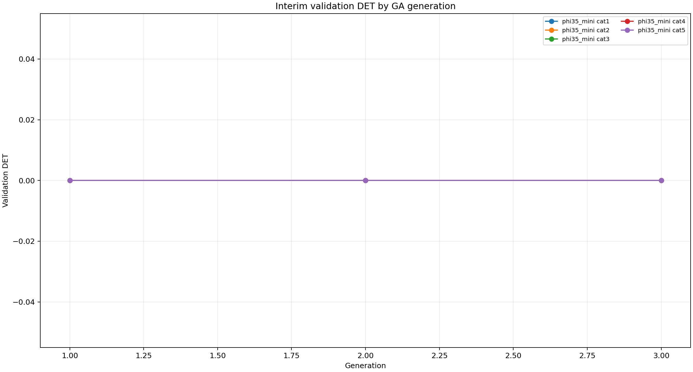
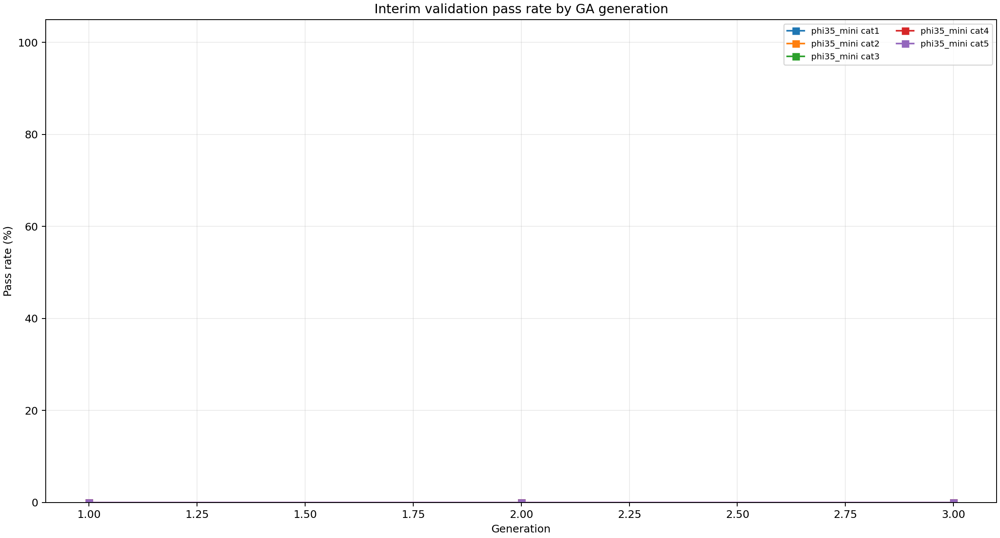
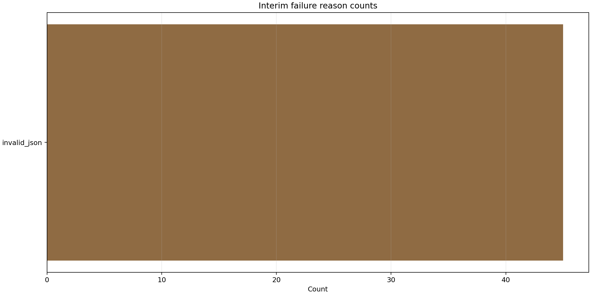

{
"run_dir": "/home/mgjeong/Desktop/llm/JOILang-Server/gpt_mg/version0_15_update20260413/results/local_prompt_ga_overnight_20260507_031506",
"progress_rows": 15,
"best_rows": 5,
"completed_model_categories_so_far": [
"phi35_mini cat1",
"phi35_mini cat2",
"phi35_mini cat3",
"phi35_mini cat4",
"phi35_mini cat5"
],
"latest_progress_row": {
"model_key": "phi35_mini",
"model_label": "Phi-3.5-mini-instruct",
"category": "5",
"generation": "3",
"genome_id": "cross-c6faced7-7e01-258d-2ed6-ac0ff566e4b7",
"fitness": "0.0",
"train_avg_det_score": "0.0",
"train_variance": "0.0",
"train_det_pass_rate": "0.0",
"train_gt_exact_rate": "0.0",
"validation_avg_det_score": "0.0",
"validation_variance": "0.0",
"validation_det_pass_rate": "0.0",
"validation_gt_exact_rate": "0.0",
"prompt_tokens": "0",
"llm_latency_sec": "0.0",
"peak_vram_gb": "0.0",
"block_01": "generated/v13_gene_pool_ba3c7b2a33/01_v13_caution_compact.txt",
"block_02": "generated/v13_gene_pool_ba3c7b2a33/02_v13_service_response_compact.txt",
"block_03": "generated/v13_gene_pool_ba3c7b2a33/03_v13_response_contract.txt",
"block_06": "generated/v13_gene_pool_ba3c7b2a33/06_v13_grammar_tempo_compact.txt",
"failure_summary": "{\"invalid_json\": 3}",
"rank_scope": "generation_best"
},
"interim_validation_det_png": "/home/mgjeong/Desktop/llm/JOILang-Server/gpt_mg/version0_15_update20260413/results/local_prompt_ga_overnight_20260507_031506/interim_figures/interim_validation_det_by_generation.png",
"interim_validation_pass_png": "/home/mgjeong/Desktop/llm/JOILang-Server/gpt_mg/version0_15_update20260413/results/local_prompt_ga_overnight_20260507_031506/interim_figures/interim_validation_pass_rate_by_generation.png",
"interim_failure_png": "/home/mgjeong/Desktop/llm/JOILang-Server/gpt_mg/version0_15_update20260413/results/local_prompt_ga_overnight_20260507_031506/interim_figures/interim_failure_reason_counts.png"
}| model_key | category | generation_count | first_generation_validation_det | best_generation | best_validation_det | best_validation_pass_rate | improvement_vs_generation1 | final_all_avg_det | final_all_pass_rate |
|---|---|---|---|---|---|---|---|---|---|
| phi35_mini | 1 | 3 | 0.0 | 1 | 0.0 | 0.0 | 0.0 | 0.0 | 0.0 |
| phi35_mini | 2 | 3 | 0.0 | 1 | 0.0 | 0.0 | 0.0 | 0.0 | 0.0 |
| phi35_mini | 3 | 3 | 0.0 | 1 | 0.0 | 0.0 | 0.0 | 0.0 | 0.0 |
| phi35_mini | 4 | 3 | 0.0 | 1 | 0.0 | 0.0 | 0.0 | 0.0 | 0.0 |
| phi35_mini | 5 | 3 | 0.0 | 1 | 0.0 | 0.0 | 0.0 | 0.0 | 0.0 |


